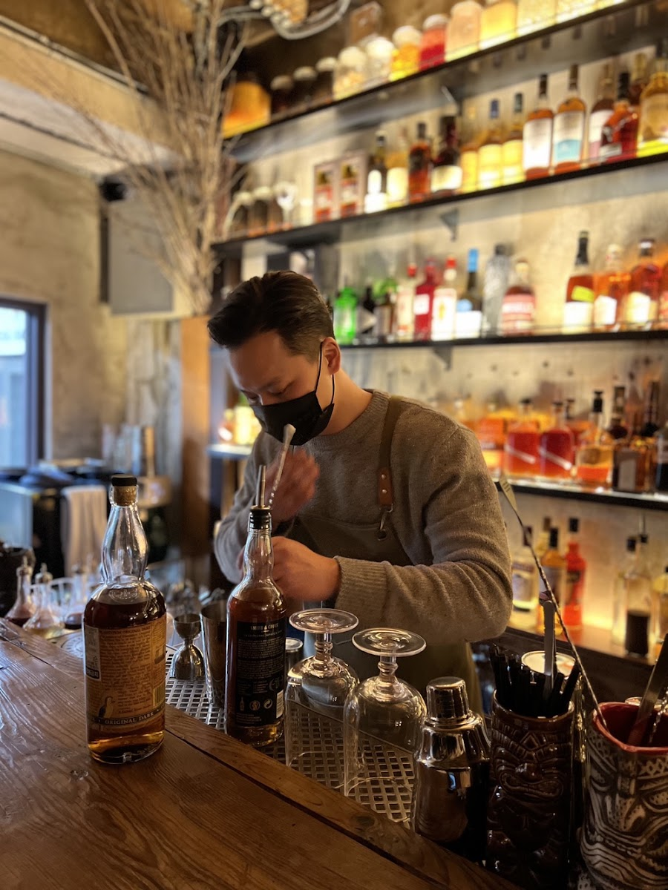

Bar Boon on Hwangnidan-gil: A Relaxed Evening Stop in Gyeongju
At a glance: Bar Boon is a bar on Poseok-ro in Gyeongju’s Hwangnidan-gil area. It may suit travelers looking to add a drink stop to an evening out, rather than a full meal. Google Maps currently shows a 5.0 rating from 954 reviews. Menus, prices, and opening hours have not been independently verified, so check the latest listing before you go.
Address: 56ho, 1058-7 Poseok-ro, Gyeongju, Gyeongsangbuk-do
A bar for a change of pace
Gyeongju is often explored through its historic sites, traditional architecture, and daytime walks. Bar Boon offers a different kind of stop: a place to pause for a drink in the Hwangnidan-gil neighborhood. It can fit naturally into an evening when you want to slow down after sightseeing, or when you are looking for somewhere to meet a travel companion before heading back to your accommodation.
Recent Korean-language search results describe Bar Boon as a bar with a distinctive atmosphere and mention cocktails. That gives a general sense of how visitors think about the venue, but it is not a reliable menu: specific drinks, food options, and current availability have not been confirmed. If you have a particular drink in mind, check the restaurant listing or ask the staff when you arrive.
Think of it as an evening add-on rather than a place to plan your whole day around. You can explore the surrounding streets first, then decide whether to stop in. That approach is especially useful if your schedule is flexible or you are visiting during a busy period.
What the review information tells you
Google Maps currently displays a 5.0 rating based on 954 reviews. That is a notably strong score, but ratings are snapshots: they can change, and individual preferences vary. Reading a few recent reviews before visiting may help you understand what guests have recently experienced, especially if atmosphere, service, or a particular type of drink matters to you.
Naver was also checked during research, but no matching local listing was confirmed. Recent Korean-language search results do mention Bar Boon, including a visitor’s account of stopping for a drink before returning to their accommodation. Treat those posts as personal impressions, not guarantees about the venue’s current offerings or conditions.
How to plan your visit
Use the full address—56ho, 1058-7 Poseok-ro—as well as the map pin when navigating. Place names can appear in different English spellings, and the business name may be shown as “Bar Boon” or “Bar Boon Hwangridangil.” If your map app has trouble matching the written address, opening the Google Maps link below should take you directly to the location.
No verified opening hours or reservation information is available here. Before setting out, check the latest map listing or the restaurant page linked below for current details. This is particularly worthwhile if you are visiting late, on a public holiday, or with a group. Do not assume that the venue is open simply because it appears in search results.
The listing identifies the venue as a bar, but a confirmed food menu was not available during research. If you need a substantial meal, have dietary restrictions, or are avoiding alcohol, contact the venue or check recent visitor information before making it your main destination. If you are comfortable deciding on arrival, you can keep the stop spontaneous and explore other nearby options if it does not suit your plans.
Good to know
- Best fit: Travelers looking for an evening drink stop in the Hwangnidan-gil area.
- Menu: Cocktails are mentioned in Korean-language search results, but the current selection has not been verified.
- Price and hours: Not confirmed; check the latest listing before visiting.
- Address: 56ho, 1058-7 Poseok-ro, Gyeongju, Gyeongsangbuk-do. Use the map pin if the written address is difficult to enter.
- Language tip: Keep the venue name and address ready to show on your phone if you need help confirming the destination.
- Review snapshot: Google Maps shows 5.0 from 954 reviews at the time of this guide’s verification; the figure may change.
Useful links
FAQ
Is Bar Boon a restaurant or a bar?
It is listed as a bar. Cocktails are mentioned in Korean-language search results, but a current menu has not been verified.
Does Bar Boon have a confirmed opening time or price range?
Neither has been confirmed for this guide. Check the current Google Maps or Tripadvisor listing before you visit.
Where is Bar Boon in Gyeongju?
Its listed address is 56ho, 1058-7 Poseok-ro, Gyeongju, Gyeongsangbuk-do. Open the Google Maps link above for the location pin.